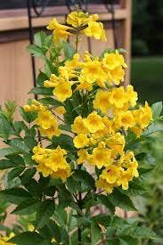

تيكوما صفراء (Tecoma Stans) تعتبر شجيرة مستديمة الخضرة وموطنها الأصلي المناطق الاستوائية الوسطى من أمريكا، وغرب الهند، وجبال الأنديز، وجنوب أمريكا. وانتشرت في المناطق الحارة حتى ارتفاع 900 م عن سطح البحر. يتراوح طولها من 2 م إلى 4 م، الأزهار أنبوبية الشكل كبيرة صفراء توجد في تجمعات (نورات) طرفية كثيفة كبيرة الحجم وتظهر في الربيع والخريف، والثمرة عبارة عن علبة طويلة (قرن) يصل طولها إلى 12 سم وتتفتح عند نضج البذور، الأوراق خضراء فاتحة منشارية الحواف، تزرع لجمال أزهارها.